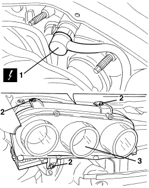

5540B82 RIGHT GAS DISCHARGE LIGHT CLUSTER - R.R.
- Path
- Procedures > 55 ELECTRICAL EQUIPMENT > 5540 EXTERIOR LIGHTING > 5540B HEADLAMPS > 5540B82 RIGHT GAS DISCHARGE LIGHT CLUSTER - R.R.
- Kind
- repair procedure (removal / refitting; the operation number is the code)
- Applies to
- all engines; all production periods
- Interactive page
- https://sloeber94.github.io/elrnDB-aBrrSpdr/en/#/946002401
Applies to: all engines; all production periods
 Removing
Removing
 Refitting
Refitting- Open the bonnet.
Op. 7055B54 UNDER ENGINE PROTECTION/GUARD - R.R.
1. Disconnect the electrical connection for the light cluster.
Description | Component |
|---|---|
RIGHT HEADLAMP |
2. Undo the bolts.
3. Remove the light cluster.

Applies to: all engines; all production periods
Refitting
Removing- Check that the light cluster is not damaged.
- Position the light cluster and secure it using the bolts.
Component | Fastening | dia | Value (daNm) | Validity |
|---|---|---|---|---|
LIGHT CLUSTER | Bolt | M6x20 | 0.7 ÷ 1.1 |
- Connect the electrical connection for the light cluster.
Topics linked from this page (4)
- 5540B39 DIPPED HEADLAMP LIGHT BEAM - ALIGN
- 7055B54 UNDER ENGINE PROTECTION/GUARD - R.R.
- 7210E10 R.R. FRONT BUMPER
- F011 RIGHT HEADLAMP
Topics that link to this page (26)
- I007 DIPPED BEAM (ONE) RH OR LH NOT WORKING
- I061 DIPPED HEADLAMPS DO NOT LIGHT UP AS THEY SHOULD
- I081 HEADLAMP ALIGNMENT ADJUSTER (ONE) RH OR LH NOT WORKING
- 5540BI CHECK THE HEADLAMP ALIGNMENT CORRECTOR POWER SUPPLY
- 5540BK CHECK THE CONTINUITY OF THE LOW BEAM WIRING INSIDE THE HEADLAMP
- 5540BK CHECK THE CONTINUITY OF THE LOW BEAM WIRING INSIDE THE HEADLAMP
- 5540BL BIDIRECTIONAL SERIAL LINE CHECK
- 5540BL BIDIRECTIONAL SERIAL LINE CHECK
- 5540BM CHECK THE HEADLAMP ALIGNMENT MOTOR SUPPLY WIRING
- 5540BP CHECK THE HIGH BEAM CONTROL COIL POWER SUPPLY
- 5540BP CHECK THE HEADLAMP HIGH BEAM FUNCTION CONTROL COIL SUPPLY WIRING
- 1004B10 POWER UNIT WITH MANUAL GEARBOX - R.R
- 1004B14 POWER UNIT WITH AUTOMATIC TRANSMISSION R + R
- 5540B41 CONTROL UNIT IN RIGHT GAS DISCHARGE LIGHT CLUSTER - R.R.
- E2010 SIDE LIGHTS/NUMBER PLATE LIGHT - WIRING DIAGRAM
- E2010 SIDE LIGHTS/NUMBER PLATE LIGHT - COMPONENT LOCATION
- E2011 DIPPED HEADLIGHTS - WIRING DIAGRAM
- E2011 DIPPED HEADLIGHTS - COMPONENT LOCATION
- E2012 MAIN BEAM HEADLIGHTS - WIRING DIAGRAM
- E2012 MAIN BEAM HEADLIGHTS - COMPONENT LOCATION
- E2020 DIRECTION INDICATORS/HAZARD WARNING LIGHTS - WIRING DIAGRAM
- E2020 DIRECTION INDICATORS/HAZARD WARNING LIGHTS - COMPONENT LOCATION
- E3080 HEADLIGHT ALIGNMENT ADJUSTMENT - WIRING DIAGRAM
- E3080 HEADLIGHT ALIGNMENT ADJUSTMENT - COMPONENT LOCATION
- E8010 MULTIPLE DIAGNOSTIC CONNECTOR - WIRING DIAGRAM
- E8010 MULTIPLE DIAGNOSTIC CONNECTOR - COMPONENT LOCATION